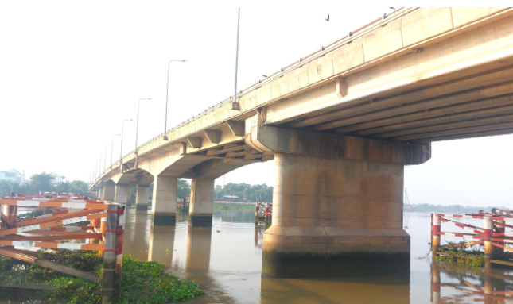

Cầu dây văng hiện đại nối TP.HCM và Bình Dương
Cầu Phú Cường là cây cầu quan trọng nối Quận 12 (TP.HCM) với TP. Thủ Dầu Một (tỉnh Bình Dương), bắc qua sông Sài Gòn. Đây là công trình giao thông chiến lược giúp giảm tải cho Quốc lộ 13 và tăng cường liên kết vùng Đông Nam Bộ.
| Tên chính thức | Cầu Phú Cường |
|---|---|
| Tên nhân gian | Cầu Phú Cường Bình Dương |
| Vị trí | Nối Quận 12 (TP.HCM) – TP. Thủ Dầu Một (Bình Dương) |
| Bắc qua | Sông Sài Gòn |
| Năm khởi công | 2004 |
| Năm hoàn thành | 2007 |
| Chiều dài | ~ 446 m (phần cầu chính) |
| Chiều rộng | 14 m |
| Tải trọng thiết kế | HL-93 |
| Loại kiến trúc | Cầu dây văng |
| Đơn vị thiết kế | Tư vấn thiết kế giao thông thuộc Bộ GTVT |
| Đơn vị thi công | Tổng công ty Xây dựng Công trình Giao thông 4 (CIENCO 4) |
| Tổng mức đầu tư | Khoảng 1.000 tỷ đồng |
Cầu Phú Cường giúp kết nối trực tiếp Bình Dương với TP.HCM, giảm áp lực cho Quốc lộ 13 và cầu Bình Triệu. Công trình góp phần thúc đẩy phát triển công nghiệp, thương mại và đô thị hóa khu vực phía Bắc TP.HCM.
Cầu Phú Cường được khánh thành năm 2009, đánh dấu bước phát triển mạnh mẽ của hạ tầng giao thông Bình Dương trong giai đoạn công nghiệp hóa nhanh chóng.

Cầu Phú Cường bắc qua sông Sài Gòn
Video thực tế cảnh cầu Phú Cường
Nếu video không hiển thị, xem trực tiếp tại: YouTube – Cầu Phú Cường
| Tên cầu | Chiều dài | Loại cầu | Năm hoàn thành |
|---|---|---|---|
| Cầu Phú Cường | 446 m | Dây văng | 2009 |
| Cầu Phú Mỹ | 2.100 m | Dây văng | 2009 |
| Cầu Bình Triệu | 402 m | Dầm thép + bê tông | 1995 / 2008 |